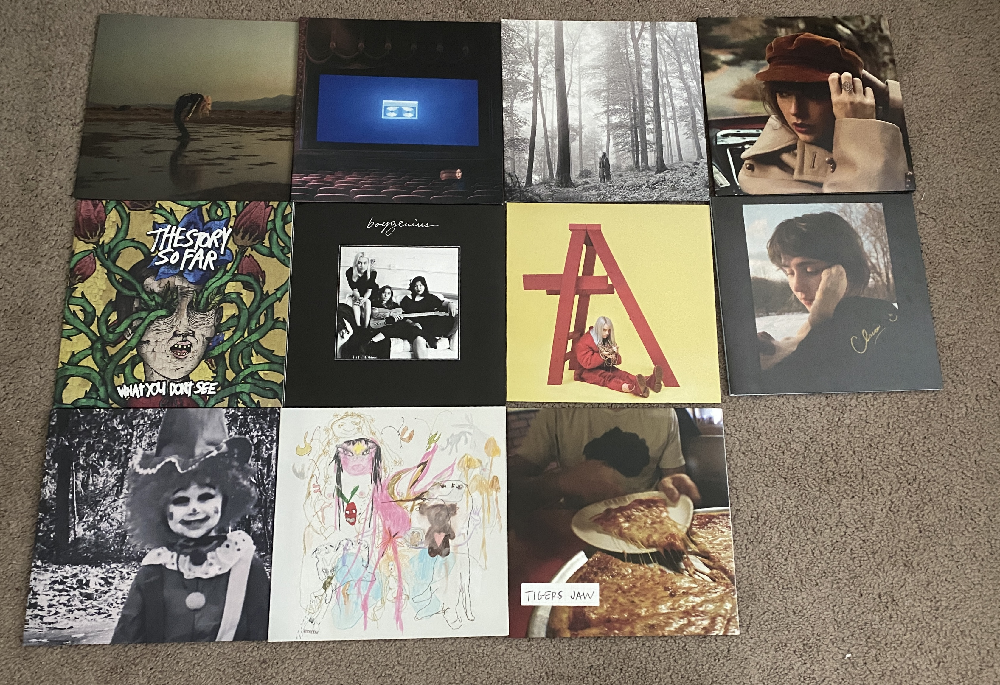

One of the things that I am most passionate about is music. I enjoy all types of music, but my favorite genres are pop punk and indie rock. I have been going to shows since I was 16, and to this day I've been to about 20 shows. I am always in search of new music, I am rarely satisfied and I love discovering new underground artists!
Here are a few of my favorite bands/artists:
You can take a look at my Spotify here.
I am always looking for new music, so feel free to send me playlists or recommend artists!
On top of listening to music, this year I started collecting vinyls. I have made really good progress, as I've collected 11 vinyls!
Here is a picture of all of them:
I hope to continue my knowledge and collection of music and vinyl!